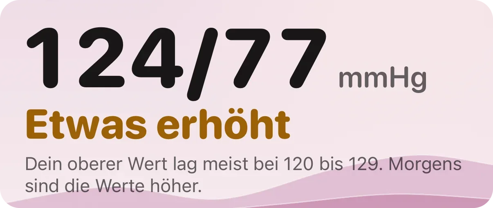
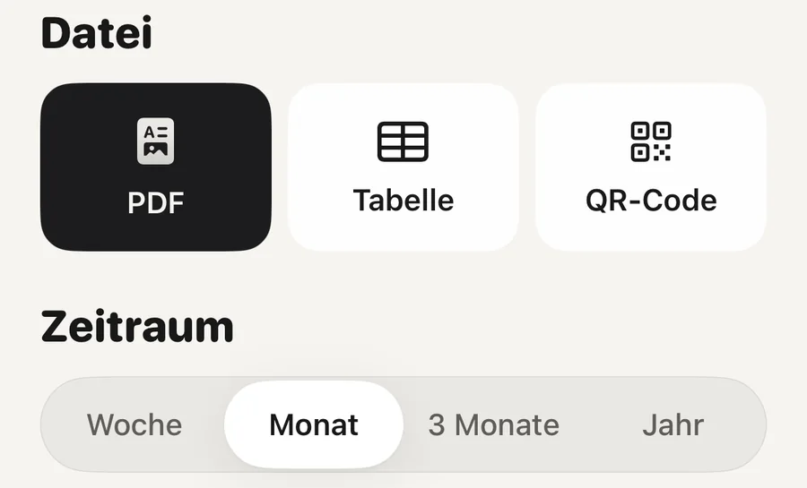

Praxis · Herz

Miss sieben Tage lang morgens zweimal und abends zweimal und bilde dann den Durchschnitt. Das verlangen europäische und amerikanische Leitlinien vor einem Arztbesuch. Setz dich vorher fünf Minuten ruhig hin, nimm ein validiertes Oberarmgerät und behalte jede Messung, nicht nur die guten. Zu Hause liegt die Grenze für Bluthochdruck bei 135/85, niedriger als die 140/90 in der Praxis.
Die Routine ist in europäischen und amerikanischen Empfehlungen fast dieselbe (Stergiou und Kollegen, 2021; Shimbo und Kollegen, 2020):
Kleine Fehler summieren sich. Sprechen, eine volle Blase, überkreuzte Beine oder ein Arm ohne Auflage können den Wert jeweils um mehrere Punkte anheben (Muntner und Kollegen, 2019).
Sieben Tage, mindestens drei. Mit je zwei Messungen morgens und abends sind das bis zu 28 Werte. Dein Arzt will deren Durchschnitt sehen, nicht den besten und nicht den schlechtesten Wert. Manche Leitlinien lassen den ersten Tag weg, weil die Werte am ersten Tag meist höher liegen (Stergiou und Kollegen, 2021).
Der Grund ist einfach: Einzelne Messungen springen. Zwei Werte im Abstand weniger Minuten unterscheiden sich oft, ohne dass etwas nicht stimmt, und der Durchschnitt einer Woche ist weit stabiler als jeder einzelne.
Dein Arzt will den Durchschnitt der Woche sehen, nicht deine beste Messung.
Du musst nicht für immer jeden Tag messen. Es zählt eine volle Woche vor dem Termin. Dazwischen reicht den meisten Menschen eine gelegentliche Kontrolle, und dein Arzt sagt dir, wie oft.
Der obere Wert ist der Druck, während dein Herz schlägt, der untere der Druck zwischen zwei Schlägen. Beide stehen in Millimeter Quecksilbersäule, mmHg.
In Europa liegt die Grenze für Bluthochdruck zu Hause bei einem Durchschnitt von 135/85 oder mehr, in der Praxis bei 140/90 (Stergiou und Kollegen, 2021). Die amerikanische Leitlinie von 2025 setzt niedrigere Stufen: 120 bis 129 oben bei unter 80 unten heißt erhöht, ab 130/80 beginnt Hypertonie Stufe 1, ab 140/90 Stufe 2 (Jones und Kollegen, 2025). Unter 120/80 gilt in beiden als normal.
Die Grenzen für zu Hause in einem Bild
Eine einzelne Messung in einer höheren Zeile bringt dich nicht dorthin. Der Durchschnitt tut es. Und ob du Bluthochdruck hast und was dann zu tun ist, kann nur ein Arzt sagen.
Viele Menschen sind in der Praxis angespannt. Unter Menschen, die in Blutdrucksprechstunden kommen, hat etwa jeder Fünfte nur in der Praxis hohe Werte und etwa jeder Siebte nur zu Hause (Stergiou und Kollegen, 2021). Keine der beiden Zahlen ist falsch. Dein Arzt nutzt beide.
Messungen zu Hause folgen dem Herzrisiko mindestens so eng wie Messungen in der Praxis. Eine Auswertung von acht Studien mit 17.698 Menschen ergab, dass der Blutdruck zu Hause Herzinfarkte, Schlaganfälle und Todesfälle vorhersagte, auch dann noch, wenn die Praxiswerte berücksichtigt wurden (Ward und Kollegen, 2012). Deshalb lohnt es sich, eine saubere Woche mitzubringen.
Ein automatisches Oberarmgerät, das eine unabhängige Genauigkeitsprüfung bestanden hat. Für diese Prüfungen gibt es einen einheitlichen Standard (Stergiou und Kollegen, 2018), und Listen der bestandenen Geräte stehen frei zugänglich auf stridebp.org und validatebp.org. Viele Geräte im Handel wurden nie so geprüft, also schau vor dem Kauf in eine Liste.
Handgelenkgeräte reagieren empfindlicher darauf, wie du den Arm hältst, und sind nicht die erste Wahl. Uhren und Ringe ohne Manschette eignen sich für ein solches Tagebuch nicht.
Die Apple Watch misst keinen Blutdruck. Ihre Benachrichtigungen bei Bluthochdruck sind eine eigene Funktion und ersetzen keine Manschette.
Messwerte kommen auf zwei Wegen in Apple Health. Ein Gerät mit Bluetooth speichert jede Messung über seine eigene App. Oder du trägst den Wert selbst ein: Öffne die Health-App, tippe auf Entdecken, dann auf Herz, dann auf Blutdruck und auf Messung hinzufügen.
Die Health-App hat auch ein eigenes Blutdruckprotokoll. Tippe unter Herz im Bereich Blutdruckmessungen auf Los geht’s, wähle sieben Tage mit Messungen morgens und abends oder vier Wochen mit täglichen Messungen, und das iPhone erinnert dich zur rechten Zeit. Am Ende kannst du auf PDF exportieren tippen. Dafür brauchst du ein iPhone 11 oder neuer mit dem neuesten iOS und ein Messgerät, und vielen reicht das völlig.
Was immer du nutzt: Bring das Tagebuch selbst mit, nicht deine Erinnerung daran. Lass Ausreißer stehen und notiere daneben, wenn etwas ungewöhnlich war, etwa Kaffee, eine kurze Nacht oder eine vergessene Tablette.

Ein Bericht für den ArztbesuchWähle Zeitraum und Datei: ein PDF zum Drucken oder Senden, eine Tabelle oder einen QR-Code, den dein Arzt scannen kann. Der QR-Code enthält eine kurze Textzusammenfassung, und der Bericht wird nirgendwo hochgeladen.
Aera, für iPhone und Apple Watch
Aera liest die Blutdruckwerte, die dein Messgerät in Apple Health speichert oder die du in der Health-App einträgst. In Aera trägst du keine Werte ein. Es bildet den Durchschnitt deiner letzten sieben Tage mit Messungen und ordnet ihn nach den Grenzen für zu Hause einem von vier einfachen Worten zu: Im Bereich, Etwas erhöht, Hoch oder Sehr hoch. Das Wort erscheint, sobald du an drei Tagen Messungen hast. Bis dahin steht dort, dass Aera noch lernt.
Unter dem Wert sagt ein Satz, welche der beiden Zahlen dich dorthin bringt und ob deine Werte morgens oder abends höher liegen. Du kannst eine Messung mit dem markieren, was gerade los war, etwa Kaffee oder eine kurze Nacht. Den Bericht für den Arztbesuch gibt es als PDF, als Tabelle oder als QR-Code, für eine Woche, einen Monat, drei Monate oder ein Jahr.
Apples Health-App kann ebenfalls ein Protokoll führen und ein PDF exportieren. Aera ergänzt die einfachen Worte, den Vergleich von morgens und abends, die Markierungen, die Tabelle und den QR-Code, und die ganze App ist auf Deutsch. Es gibt kein Konto. Ein Bericht über bis zu einen Monat ist kostenlos, drei Monate oder ein Jahr gehören zu Premium.
Aera ist kein Medizinprodukt und stellt keine Diagnose. Ob du Bluthochdruck hast, kann dir nur ein Arzt sagen.
Sieben Tage, morgens und abends je zwei Messungen im Abstand von einer Minute. Drei Tage sind das Minimum. Dein Arzt betrachtet den Durchschnitt aller Messungen, und manche Leitlinien lassen den ersten Tag weg.
Unter 120/80 gilt als normal. In Europa liegt die Grenze für Bluthochdruck zu Hause bei einem Durchschnitt von 135/85 oder mehr, niedriger als die 140/90 in der Praxis. Nach der amerikanischen Leitlinie beginnt Hypertonie Stufe 1 bei 130/80 und Stufe 2 bei 140/90. Es zählt der Durchschnitt der Woche, nicht eine einzelne Messung.
Nein. Die Apple Watch misst keinen Blutdruck, und ihre Benachrichtigungen bei Bluthochdruck ersetzen keine Manschette. Für ein Tagebuch brauchst du ein Oberarmgerät, am besten von einer validierten Liste. Ein Gerät mit Bluetooth kann seine Werte in Apple Health speichern.
Im Blutdruckprotokoll der Health-App kannst du am Ende des Messzeitraums auf PDF exportieren tippen. Apps, die Apple Health lesen, können das auch. Aera erstellt aus deinen Messungen einen Bericht als PDF, als Tabelle oder als QR-Code.
Verwandte Notiz (auf Englisch): was eine Consumer-Uhr nicht messen kann
Verwandte Ratgeber: Welcher Ruhepuls ist normal? · Apple Watch HRV: Was ist normal? · Was bedeutet das biologische Alter, das deine Uhr zeigt? · Deine Apple Watch meldet möglichen Bluthochdruck. Was jetzt?
 Oder mit dem iPhone scannen
Oder mit dem iPhone scannenKostenlos laden. Ohne Konto. Läuft mit der Uhr, die du schon trägst.